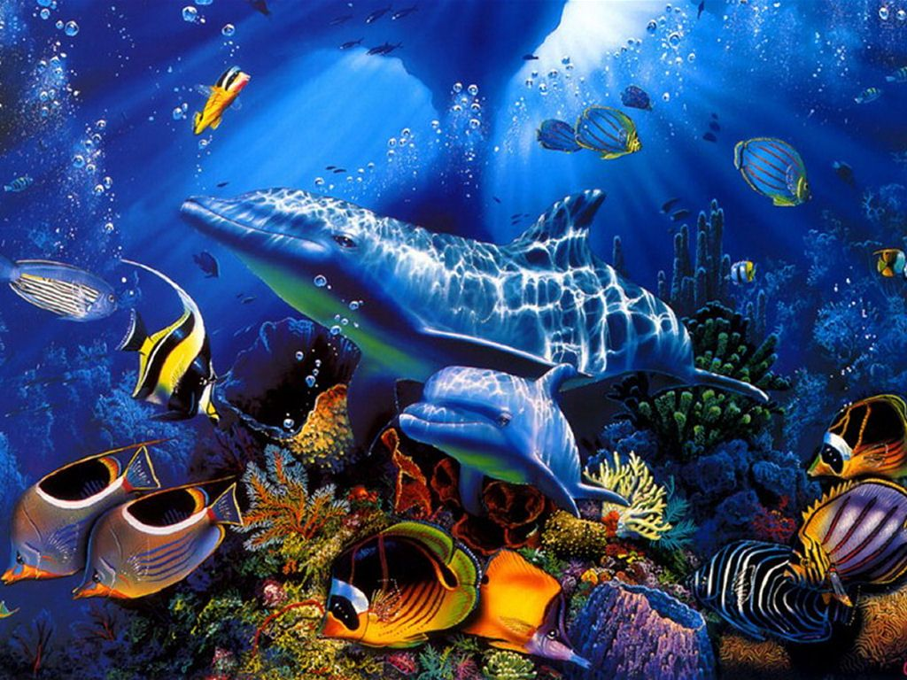

Desde 2008, a ONU celebra o Dia Mundial dos Oceanos em 8 de junho para destacar a importância desse ecossistema. Em 2024, a data foi celebrada em 7 de junho, ressaltando a necessidade de atenção às consequências das mudanças climáticas nos oceanos. As mudanças climáticas já estão causando aumento na frequência e intensidade de eventos como ondas de calor, furacões e secas, além do aumento do nível do mar. Estudos indicam que há 80% de chance de a temperatura global ultrapassar 1,5°C acima dos níveis pré-industriais nos próximos cinco anos, acelerando o derretimento das calotas polares. Cidades litorâneas nos Estados Unidos, como Boston e Miami, estão ameaçadas de desaparecer até 2050 devido ao aumento do nível do mar. Outros estudos indicam riscos para países inteiros, como o Sul do Vietnã e a capital da Indonésia, Jacarta. Na Tailândia, mais de 10% da população corre risco de inundação até 2050.
A ONU enfatiza a necessidade de mudança na relação com os oceanos, sob o tema "Despertar de Novas Profundezas". Os oceanos têm registrado temperaturas recorde, impactando a vida marinha, com eventos como branqueamento de corais e alterações no ciclo sazonal das temperaturas. O aumento do calor nos mares pode intensificar a temporada de furacões e ter consequências na Europa. O aquecimento global está causando impactos significativos nos oceanos, com previsão de aumento do nível do mar e ameaça a diversas regiões costeiras em todo o mundo. A urgência em tomar medidas para mitigar esses efeitos é evidente, destacando a importância de ações globais para proteger esse ecossistema vital. É fundamental que governos, organizações e indivíduos ajam de forma colaborativa e decisiva para enfrentar esse desafio e garantir a preservação dos oceanos para as gerações futuras.

O crescente problema da poluição oceânica ganhou destaque recentemente com a divulgação de um estudo sobre a presença de lixo no oceano profundo. Enquanto os esforços de pesquisa e conscientização sobre a poluição dos oceanos aumentam, há uma lacuna significativa no conhecimento sobre o lixo presente nas profundezas do oceano, definido como áreas com mais de 200 metros de profundidade. O relatório, publicado na revista Marine Pollution Bulletin, destaca descobertas alarmantes sobre a presença de lixo marinho persistente nas áreas do talude continental do Sul e Sudeste do Brasil.
Pesquisadores da Universidade de São Paulo (USP) conduziram o estudo, que revelou a presença de lixo em 28 dos 31 locais amostrados em duas áreas distintas da costa Sul/Sudeste do Brasil. Em alguns desses locais, a quantidade de resíduos encontrada foi superior à de peixes e invertebrados, levantando preocupações sobre o impacto do lixo marinho na biodiversidade e na saúde dos ecossistemas oceânicos. Marcelo Melo, do Laboratório de Diversidade, Ecologia e Evolução de Peixes do Instituto Oceanográfico da USP, explica que o projeto inicialmente visava estudar a vida marinha das profundezas, mas a equipe ficou surpresa ao encontrar uma quantidade significativa de lixo em praticamente todas as coletas. Isso motivou os pesquisadores a coletar, armazenar e estudar o lixo encontrado. Flávia Masumoto, pesquisadora do grupo e primeira autora do artigo, ressalta a surpresa ao não encontrar estudos anteriores sobre a presença de lixo no oceano profundo brasileiro. Essa lacuna destacou a importância do trabalho realizado pela equipe.
O estudo, financiado pela FAPESP por meio de dois projetos vinculados ao Programa BIOTA, coletou material em 16 pontos de São Paulo e 15 estações de Santa Catarina. A maioria das amostras continha plástico, que representou 58,5% do total recolhido, seguido por tecidos e metais. A presença de lixo foi observada em praticamente todos os locais, com uma massa total de 13,78 quilos coletados. A origem do lixo marinho é complexa, mas os pesquisadores sugerem que grande parte pode ter vindo de embarcações ou plataformas offshore. A proximidade de áreas urbanizadas, como o Porto de Santos e a Bacia de Santos, pode ter contribuído para a maior quantidade de lixo encontrada em São Paulo em comparação com Santa Catarina.
Apesar das regulamentações, como a Lei 9.966, de 2000, que proíbe o descarte direto de lixo no mar por embarcações e plataformas, os resultados do estudo destacam a necessidade de uma conscientização e fiscalização mais eficazes para mitigar a poluição oceânica. Este estudo destaca a necessidade urgente de compreender e abordar o impacto do lixo marinho nas profundezas do oceano, ressaltando a importância da conservação marinha e da adoção de práticas sustentáveis para proteger os ecossistemas oceânicos.
Os oceanos do nosso planeta são verdadeiros tesouros de biodiversidade, abrigando uma riqueza incomparável de vida marinha. Desde os majestosos peixes até os impressionantes mamíferos marinhos, dos pequenos crustáceos aos fascinantes equinodermos, cada criatura subaquática desempenha um papel fundamental nos ecossistemas oceânicos. Esses animais não só oferecem um espetáculo fascinante para os mergulhadores explorarem, mas também desempenham papéis vitais na manutenção do equilíbrio dos oceanos.
Explorar o mundo subaquático é como entrar em um universo paralelo, onde cada encontro com uma criatura marinha é uma experiência única e memorável. Desde os gigantes gentis, como o Tubarão Baleia, até as graciosas Raias Manta, os mergulhadores têm a sorte de testemunhar esses magníficos animais em locais deslumbrantes ao redor do mundo. Em destinos como Holbox, Galápagos, Filipinas e Maldivas, os mergulhadores podem se maravilhar com a presença imponente do Tubarão Baleia, enquanto em locais como Havaí, Filipinas, Maldivas, Indonésia e Galápagos, podem ter encontros próximos e pessoais com as majestosas Raias Manta. Além desses gigantes do oceano, os mergulhadores também têm a oportunidade de nadar ao lado das icônicas Tartarugas Marinhas, conhecidas por sua graça e beleza. Locais como a Grande Barreira de Corais, Galápagos e Ilha Apo, nas Filipinas, oferecem cenários deslumbrantes para esses encontros inesquecíveis.
Os Golfinhos, com sua inteligência e carisma, também são atrações imperdíveis para os mergulhadores. Em lugares como Galápagos, Bahamas, Socorro, Raja Ampat, Recife Ningaloo e Havaí, os mergulhadores têm a chance de nadar e interagir com esses animais incríveis, criando memórias que durarão para sempre. E não podemos esquecer das impressionantes Baleias Jubarte, que encantam com seus movimentos graciosos e canções hipnotizantes. Em destinos como Tonga, República Dominicana e Havaí, os mergulhadores podem testemunhar de perto esses espetáculos da natureza, criando uma ligação profunda com esses gigantes do mar
Além dessas criaturas icônicas, os mergulhadores também podem se deparar com uma variedade de outras espécies fascinantes, como o baiacu, lacraias-do-mar, choco, tubarão-martelo, dragões-marinhos-folhados, cavalos-marinhos, polvos e nudibrânquios. Cada encontro subaquático oferece uma nova perspectiva sobre a incrível diversidade da vida marinha e inspira um maior apreço e conservação dos oceanos. Portanto, é fundamental continuar explorando e protegendo esse fascinante reino submarino, garantindo um futuro sustentável para todos. A conservação dos oceanos não é apenas uma questão ambiental, mas uma necessidade para preservar a vida no planeta Terra. Vamos unir esforços para proteger esses ecossistemas preciosos e garantir que as gerações futuras também possam desfrutar da beleza e da maravilha dos oceanos.